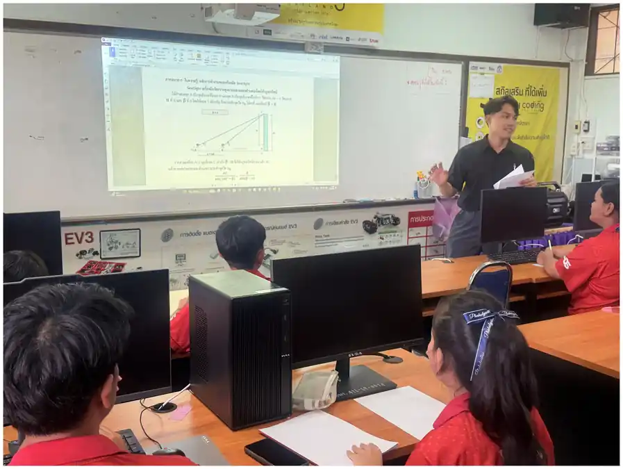
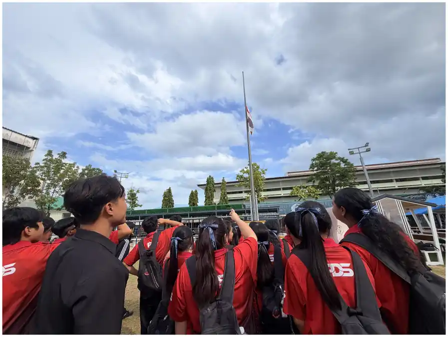
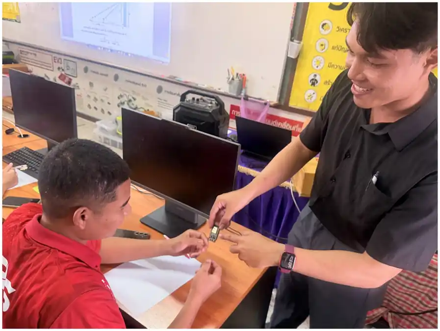
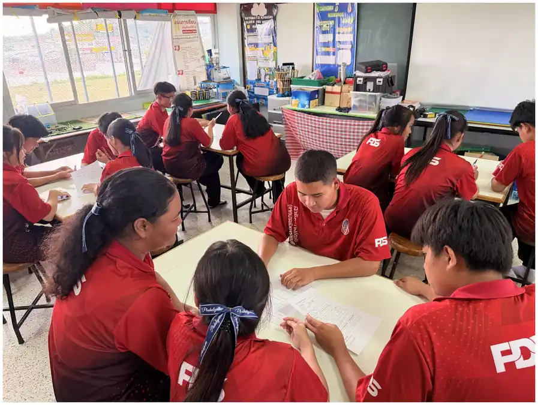
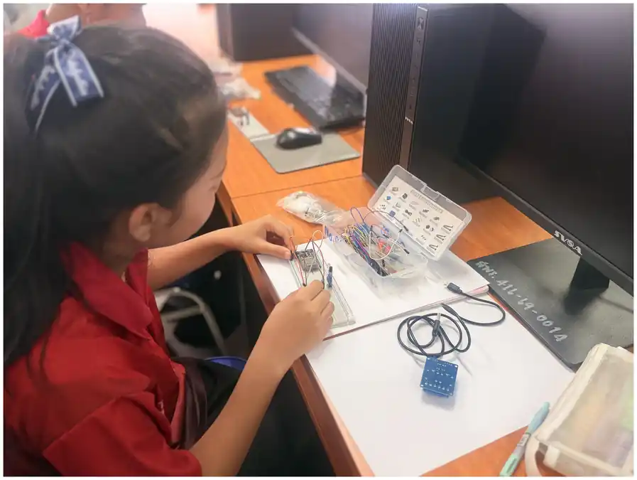
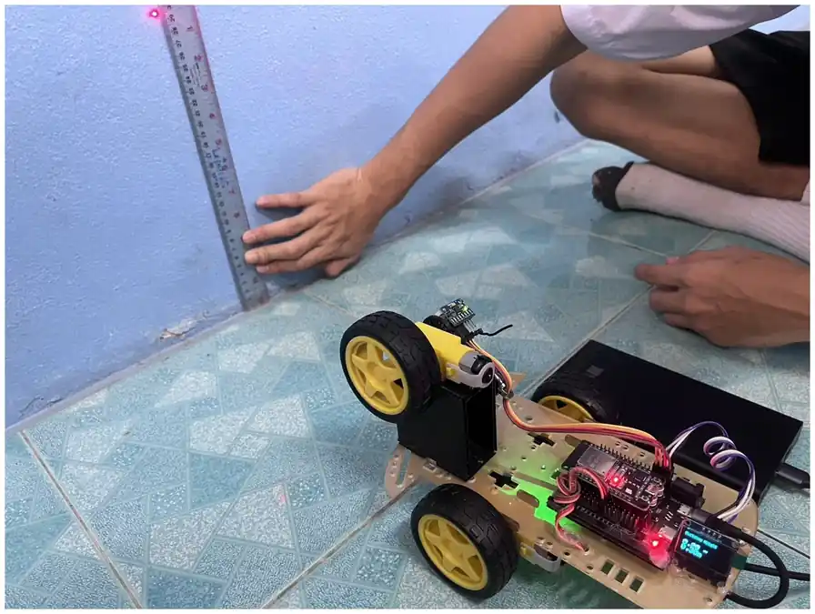
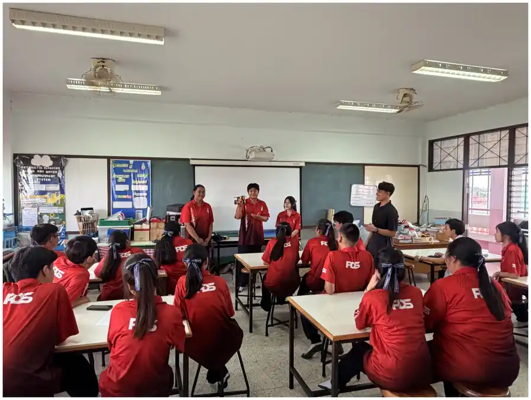
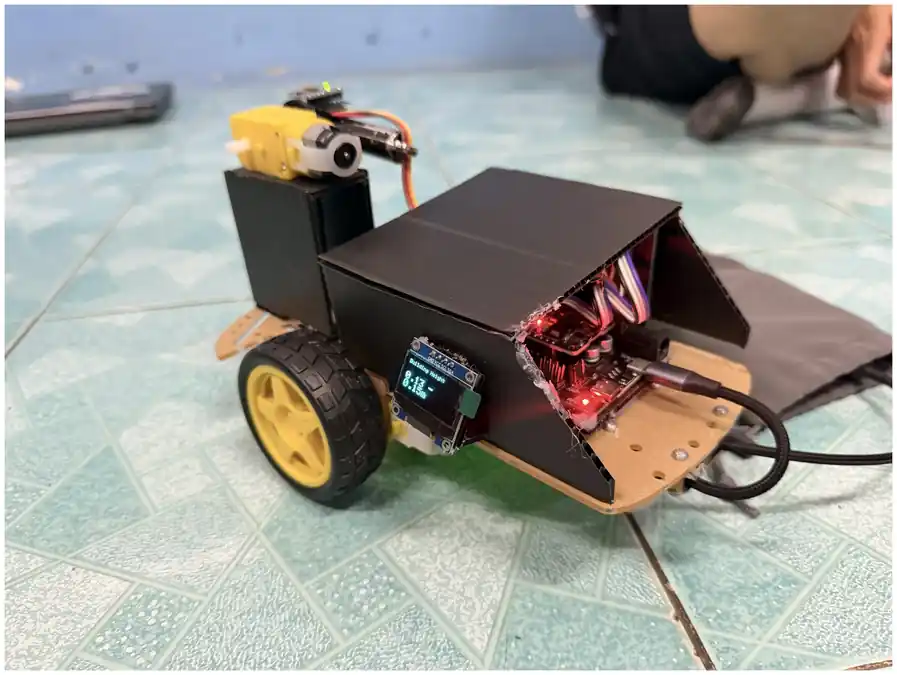
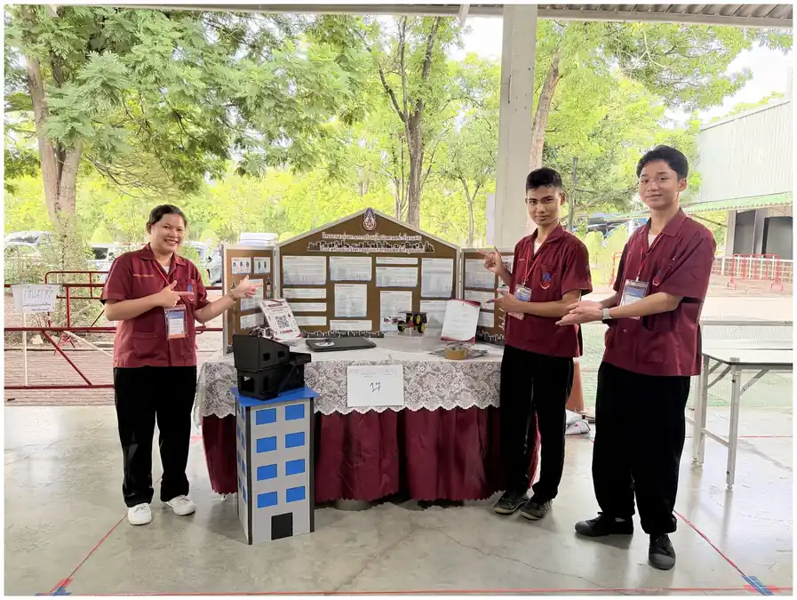
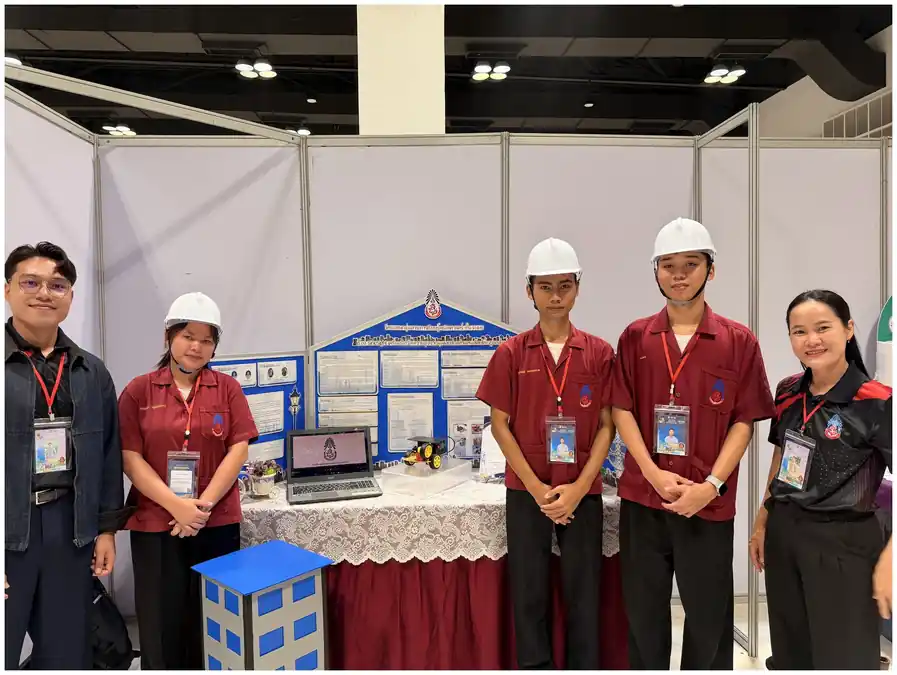

S
เผชิญสถานการณ์ปัญหา
เราจะวัดความสูงที่เข้าถึงยอดไม่ได้อย่างไร?
EDUCATIONAL INNOVATION PROJECT · TEACHER
คิดอย่างมีเหตุผล · ลงมือสร้าง · ตรวจสอบด้วยข้อมูล
THE CHALLENGE
ผู้เรียนคำนวณตามตัวอย่างได้
แต่ยังมีข้อจำกัดในการวิเคราะห์สถานการณ์
และเลือกใช้ความรู้ด้วยตนเอง
คะแนนเฉลี่ยก่อนเรียน
นักเรียน ม.6 จำนวน 36 คน

LEARNING DESIGN
โครงงานเป็นฐานร่วมกับสะเต็มศึกษา
จัดลำดับการเรียนรู้ผ่าน SIGHT Model
วิเคราะห์ปัญหาและสร้างแบบจำลองจากสถานการณ์จริง
เปรียบเทียบผลสัมฤทธิ์ก่อนและหลังเรียน
ออกแบบ ทดลอง ปรับปรุง และต่อยอดผลงานกลุ่มตัวแทน
THE SIGHT MODEL
สำรวจวัตถุจริง ระบุสิ่งที่ต้องการหา และพิจารณาเงื่อนไขของการวัด
SITUATION → INVESTIGATE

เราจะวัดความสูงที่เข้าถึงยอดไม่ได้อย่างไร?

กฎของไซน์ · มุมเงย · เซนเซอร์ · การประมวลผล
GENERATE → HANDS-ON

แบบจำลอง · ผังงาน · บทบาทสมาชิก · เกณฑ์ทดสอบ

ประกอบวงจร เขียนโปรแกรม และปรับปรุงจากปัญหาที่พบ
TEST, TRANSFER & TELL
ผลการทดสอบย้อนกลับไปสู่การออกแบบและปรับปรุง


IMPLEMENTATION
คณิตศาสตร์เพิ่มเติม · มัธยมศึกษาปีที่ 6 · การประยุกต์ใช้กฎของไซน์เพื่อแก้ปัญหาการวัดความสูง
แบบทดสอบ ใบงาน แบบจำลองและสมการ
เกณฑ์ผ่าน ≥ 70%
ผังงาน ต้นแบบ การสอบเทียบและการนำเสนอ
ระดับดีขึ้นไป
บทบาท ความรับผิดชอบและการสะท้อนคิด
ระดับดีขึ้นไป

STUDENT INNOVATION
เครื่องมือวัดความสูงจากมุมเงย
สองตำแหน่งโดยใช้กฎของไซน์
คัดเลือกกลุ่มตัวแทนจากผู้เรียน 36 คน ตามความพร้อมและความสนใจ เพื่อต่อยอดเป็นโครงงาน
LEARNING OUTCOMES
กลุ่มเป้าหมายเดียวกัน N = 36 · คะแนนเต็ม 20
ภาคเรียนที่ 1 ปีการศึกษา 2569
คะแนนเฉลี่ยที่เพิ่มขึ้น
ผ่านเกณฑ์หลังเรียน ≥ 70%
ผลการเปรียบเทียบก่อน–หลังเรียนในกลุ่มที่ศึกษา ตามข้อมูลรายงานและตารางคะแนนรายบุคคล
BEYOND THE CLASSROOM

ระดับภาค · ปีการศึกษา 2569

ระดับประเทศ · ปีการศึกษา 2569
TRANSFERABLE LEARNING
วิเคราะห์ วางแผน ทดลอง และตรวจสอบคำตอบ
ออกแบบ ลงมือทำ รับผิดชอบ และสื่อสารเหตุผล
พัฒนาแผน ใบกิจกรรม และเกณฑ์ประเมินต่อได้
แนวทางปรับใช้กับเนื้อหาอื่น
เปลี่ยนสถานการณ์หรือชิ้นงานให้สอดคล้องกับจุดประสงค์ และประเมินผลในบริบทใหม่
SIGHT MODEL / GRC2026
SIGHT จัดลำดับการเรียนรู้ให้ผู้เรียน
เชื่อมความรู้ การออกแบบ และการตรวจสอบเข้าด้วยกัน